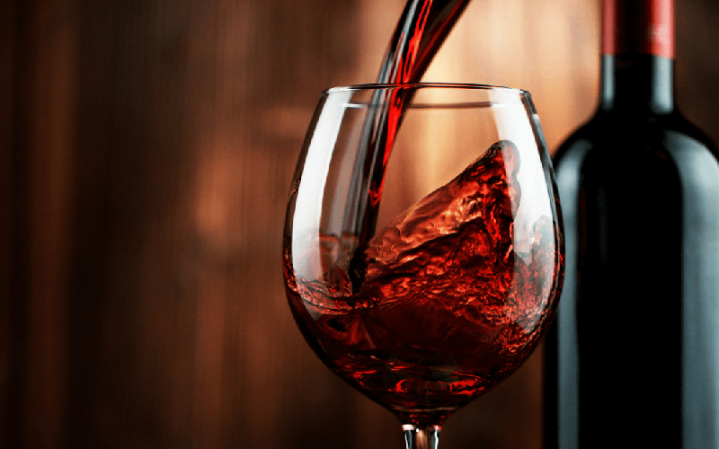

Descubra o vinho ideal para cada momento

Receba recomendações personalizadas como em nossa loja física e encontre o vinho perfeito para cada ocasião.
Sobre a Vinheria
A Vinheria Agnello é uma empresa familiar com mais de 15 anos de tradição no mercado de vinhos. Trabalhamos com rótulos selecionados, nacionais e internacionais, sempre priorizando a qualidade e a satisfação dos nossos clientes.
Nosso grande diferencial está no atendimento personalizado, onde ajudamos cada cliente a escolher o vinho ideal de acordo com seu gosto, ocasião e tipo de refeição.
Tipos de Vinhos
Conheça os principais tipos disponíveis em nossa vinheria:
- Tinto: Ideal para carnes vermelhas e pratos mais intensos.
- Branco: Leve e refrescante, perfeito para peixes e frutos do mar.
- Rosé: Equilibrado e versátil, excelente para dias quentes.
Harmonização de Vinhos
A harmonização é a arte de combinar vinhos com alimentos, proporcionando uma experiência gastronômica mais completa e agradável.
De forma geral, vinhos tintos combinam com carnes vermelhas, enquanto vinhos brancos são ideais para pratos leves como peixes e saladas.
Uma experiência como na loja física
Na Vinheria Agnello, acreditamos que escolher um vinho vai além da compra: é uma experiência que envolve conhecimento, sensações e momentos especiais.
Por isso, buscamos trazer para o ambiente online a mesma atenção e cuidado oferecidos em nossa loja física, auxiliando nossos clientes em cada escolha.
Precisa de ajuda para escolher?
Nossa equipe está pronta para te ajudar a encontrar o vinho ideal para qualquer ocasião. Entre em contato conosco e receba recomendações personalizadas.
Fale com um especialista